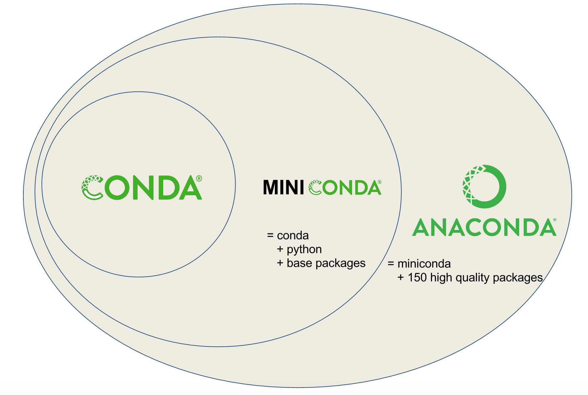

GCB 2020 Tutorial#
What exactly is Conda?#
- A package and environment manager
Like apt/yum, but much more flexible
Environments are isolated from each other
- User-contributed package recipes
Different “channels”, can create your own
Updated constantly
- Prebuilt binaries
Linked to libraries in the same environment

Conda packages#
Specific versions
Various sources (“channels”)
- Defined requirements
Usually from the same or predefined other channels
. ├── info │ └── recipe │ ├── conda_build_config.yaml │ ├── meta.yaml │ └── parent └── site-packages ├── snakemake └── snakemake-5.24.0.dist-info └── LICENSE.md
Conda channels#
| digraph { "Channel 1" [fillcolor=red style=filled]; } | digraph { "Channel 2" [fillcolor=red style=filled]; } | digraph { "Channel 3" [fillcolor=red style=filled]; } |
|---|---|---|
package-1.2.3
package-1.2.2
package-1.2.1
package-1.0.0alpha2
package-1.0.0alpha1
|
dependency-1.1.2
package-1.2.3
package-1.2.0
package-1.2.1
package-1.2.0
pysam-0.16.0.1
samtools-1.10
snakemake-5.24.0
|
libgcc-ng-9.3.0
libcurl-7.71.1
zlib-1.2.11
numpy-1.19.1
scipy-1.5.2
|
conda-forge: Most dependencies (numpy, scipy, zlib, CRAN packages, etc.)
bioconda: Most bioinf packages (salmon, STAR, samtools, DESeq2, etc.)
defaults: Packages built by Anaconda Inc.
- Order matters! Use this one:
$ conda config --show channels channels: - conda-forge - bioconda - defaults $ conda config --prepend channels bioconda $ conda config --prepend channels conda-forge
Finding Packages#
Search https://anaconda.org
- Use
conda search $ conda search pysam Loading channels: done # Name Version Build Channel [...] pysam 0.16.0 py36h71d3148_1 bioconda pysam 0.16.0 py36h873a209_0 bioconda pysam 0.16.0 py37ha9a96c6_0 bioconda pysam 0.16.0 py37hc501bad_1 bioconda pysam 0.16.0.1 py27ha863e18_1 bioconda pysam 0.16.0.1 py36h4c34d4e_1 bioconda pysam 0.16.0.1 py36h71d3148_0 bioconda pysam 0.16.0.1 py37hc334e0b_1 bioconda pysam 0.16.0.1 py37hc501bad_0 bioconda pysam 0.16.0.1 py38hbdc2ae9_1 bioconda
- Use
- Packages have versions, build numbers, build hashes/strings
Build hashes include dependency information
Bioconda packages are also listed at http://bioconda.github.io/conda-package_index.html
Practical 1#
What are the most recent versions of samtools and Snakemake?
$ conda search samtools | tail -n1
samtools 1.10 h9402c20_2 bioconda
$ conda search snakemake | tail -n1
snakemake 5.24.0 1 bioconda
Conda environments#
A (mostly) self-contained directory with a set of compatible packages
Uses links to reduce disk space when possible
├── bin
├── conda-meta
├── envs
│ ├── tutorial
│ ├── pysam
│ ├── samtools
│ └── snakemake
├── etc
├── include
├── lib
├── libexec
├── pkgs
└── share
|
digraph { rankdir="LR"; node [fillcolor=red style=filled]; "pkgs/foo" -> "env1/foo"; "pkgs/foo" -> "env2/foo"; "pkgs/foo" -> "env3/foo"; } |
$ ls -1i **/bin/samtools
116889197 envs/tutorial/bin/samtools
116889197 envs/samtools/bin/samtools
116889197 pkgs/samtools-1.10-h2e538c0_3/bin/samtools
|
Conda environments#
Linking is relative to packages!
No more conflicting dependencies between versions!
$ ldd -r envs/samtools/bin/samtools
linux-vdso.so.1 => (0x00007ffc684ef000)
libhts.so.3 => /home/gcb2020/conda/envs/samtools/bin/../lib/libhts.so.3 (0x00007f32c8eac000)
libtinfow.so.6 => /home/gcb2020/conda/envs/samtools/bin/../lib/libtinfow.so.6 (0x00007f32c8e6c000)
libncursesw.so.6 => /home/gcb2020/conda/envs/samtools/bin/../lib/libncursesw.so.6 (0x00007f32c8e2f000)
libm.so.6 => /lib64/libm.so.6 (0x00007f32c8ad0000)
libz.so.1 => /home/gcb2020/conda/envs/samtools/bin/../lib/libz.so.1 (0x00007f32c8e11000)
[...]
Conda environments – common commands#
conda info --envs(orconda env list)Lists available environments
$ conda info --envs # conda environments: # base * /home/gcb2020/conda tutorial /home/gcb2020/conda/envs/tutorial pysam /home/gcb2020/conda/envs/pysam samtools /home/gcb2020/conda/envs/samtools snakemake /home/gcb2020/conda/envs/snakemake
You start in
baseThe
*indicates the active environment
conda create/conda env removeCreate/remove environments
$ conda create --name=myenv python=3.8 numpy 'pysam>=0.16' $ conda env remove --name=myenv
Packages can have versions specified
Min/max versions can be specified
conda activate/conda deactivateActivates/deactivates an environment
$ command -v samtools $ conda activate samtools $ command -v samtools /home/gcb2020/conda/envs/samtools/bin/samtools $ conda deactivate $ command -v samtools
You can “stack” environments with
conda activate --stack ...
conda install/conda removeconda list$ conda activate myenv $ conda install snakemake ... a lot of status output ... $ conda list ... many packages ... $ conda remove snakemake
Tip
Keep your
baseenv clean! (only the package manager + its deps)Generously create/remove environments for different tools/workflows!
Introducing mamba#
Newer package manager called
mambaA reimplementation of
conda- Compatible with
conda Installed beside
condain thebaseenvironment
- Compatible with
- Much faster than
conda Native binary, C++ code
Uses another dependency solver,
libsolv
- Much faster than
- Does not suffer from a yet-to-be-fixed bug in
conda condamay install older versions ofsnakemakeunless
conda config --prepend repodata_fns repodata.jsonis set
- Does not suffer from a yet-to-be-fixed bug in
Practical 2#
Let’s create some new environments!
- But first make sure that
condais up to dateThe correct channel order is in place
$ conda activate base $ conda update --all $ conda --version conda 4.8.4 $ conda config --show channels channels: - conda-forge - bioconda - defaults $ conda config --show-sources ==> /home/gcb2020/.condarc <== channels: - conda-forge - bioconda - defaults $ conda info
Practical 2.1#
Create a new environment named “mapping” with
bwa-mem2andpysamstatsWhat versions of
numpyandpythongot installed in it?
$ conda create --name=mapping bwa-mem2 pysamstats
$ conda activate mapping
$ conda list | grep -E '^(python|numpy)\>'
numpy 1.19.1 py38hbc27379_2 conda-forge
python 3.8.5 h1103e12_7_cpython conda-forge
$ conda list '^(numpy|python)$'
Practical 2.2#
Create a new environment for Snakemake with
mamba
$ conda install --name=base mamba
$ mamba --version
mamba 0.5.1
conda 4.8.4
$ mamba create --name=snakemake snakemake
$ conda activate snakemake
$ snakemake --version
5.24.0
Conda environments – common commands#
conda env export/conda env createExports or creates an environment from a YAML file
$ conda env export --no-builds > env.yaml $ conda env create --name=more-map-and-call --file=env.yaml $ head env.yaml name: map-and-call channels: - conda-forge - bioconda - defaults dependencies: - _libgcc_mutex=0.1 - _openmp_mutex=4.5 - bcftools=1.10.2 - blis=0.7.0
Common pitfalls#
Wrong channel order
Installing packages in your
baseenvManually manipulating
$PYTHONPATHAvoid manually (i.e., not via
conda/mamba) installed packages
Conda package recipes#
$ tree -A recipes/varlociraptor
recipes/varlociraptor/
├── build.sh
└── meta.yaml
meta.yamlis required- optional:
build.sh(small) test files
license file
meta.yaml sections#
package: name and versionsource: url and SHA256/MD5 checksumsbuild: build number, platforms to skip, “noarch” informationrequirements: packages for building, linking, runningtest: commands/importsabout: webpage, license, summary of what the package doesextras: comments, maintainers, etc.
package#
package:
name: unifrac
version: 0.20.0
Can also use Jinja variables:
{% set version = "0.20.0" %}
package:
name: unifrac
version: {{ version }}
source#
source:
url: https://github.com/biocore/unifrac/archive/{{ version }}.tar.gz
sha256: e2692c683fddc6450ca4da049112b00264cf61aef1071d2ebc0f0539b86611b8
Avoid
git_url/svn_urlOnly actual releases, no alpha/beta
build#
build:
number: 0
Reset to
0with new releasesIncrement with each change for same version
- Can skip build on conditions
build: number: 0 skip: True # [osx or py<36]
noarchis useful, but has special semanticsgeneric: No platform-specific code (Java, pure Perl, pure R, etc.)build: number: 0 noarch: generic
python: Pure Python packages, one build -> all versionsbuild: number: 0 noarch: python
Not usable with
# [condition]selectors- Only if using
noarch: python: use
- python >=3.0instead ofskip: True # [py<30]
- Only if using
You can include entire build command
build: number: 0 noarch: python script: {{ PYTHON }} -m pip install . --no-deps -vv
Alternatively, use
build.shfor “more involved” installs$ cat build.sh # !/usr/bin/env bash "${PYTHON}" -m pip install . --no-deps -vv
There are more predefined environment variables in conda-build
requirements#
requirements:
build:
- {{ compiler('c') }}
host:
- htslib
- zlib
run:
- htslib
- zlib
build: Compilers, preprocessors, etc.host: Anything linked againstrun: All other dependenciesUse compiler functions (
{{ compiler('cxx') }}and such)
A note on “pinnings”#
Packages need to be compatible
Same compiler per platform
Same
htslib/numpy/zlib/libcurl/etc. versionsAbove are “pinned”
$ conda search samtools | tail -n1
samtools 1.10 h9402c20_2 bioconda
The hash
h9402c20above is specific to the used pinningBioconda uses conda-forge-pinning
Version ranges are very useful!
- importlib_metadata >=1.7.0,<2.0.0 - pysam >=0.16,<0.17 - python >=3.7 - pyyaml >=5.3,<6
test#
test:
imports:
- vembrane
commands:
- vembrane --help
Keep it simple/quick but functional
No large test files
importsworks for Python/Perl
about/extra#
about:
home: https://github.com/vembrane/vembrane
license: MIT
license_file: LICENSE
summary: Filter VCF/BCF files with Python expressions.
extra:
recipe-maintainers:
- felixmoelder
- mbargull
Please include
licenseandlicense_file!
Don’t fear skeletons#
Making recipes manually takes time
- Many common sources are automated
$ mkdir recipe $ cd recipe $ conda-skeleton pypi vembrane
- Skeletons for: PyPI, CPAN, CRAN
For CRAN: bgruening/conda_r_skeleton_helper
CRAN packages belong on conda-forge if possible!
For PyPI:
grayskullis a newer/improved implentation
We (Bioconda) already make ALL Bioconductor packages
On bioconda-recipes, recipes are in
recipes/
Practical 3#
Make a new cutadapt recipe
$ conda create --name=conda-build conda-build
$ conda activate conda-build
$ mkdir recipes
$ cd recipes
$ conda-skeleton pypi cutadapt
$ $EDITOR cutadapt/meta.yaml # edit build, host requirements, license_file
Common problems#
Compiling C/C++ packages can be troublesome
The compiler is NOT called
gccInstalled into
$PREFIXLibrary dependencies are in
$PREFIX/lib
$ cat build.sh
#! /usr/bin/env bash
make install \
CC="${CC}" \
CXX="${CXX}" \
CFLAGS="${CFLAGS}" \
CXXFLAGS="${CXXFLAGS}" \
LDFLAGS="${LDFLAGS}" \
prefix="${PREFIX}"
Practical 4 and/or Q&A#
bioconda-recipes tour?
- Want to contribute new packages?
Questions?